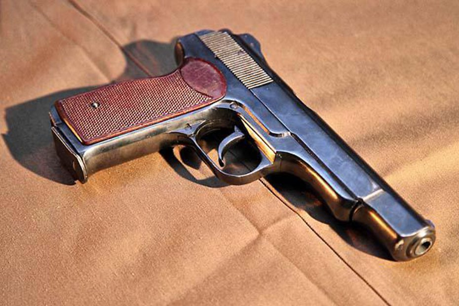

Типы
Автоматический
Полуавтоматический
Самозарядные
Пистоле́т (фр. pistolet ← фр. pistole от чеш. píšťala «пищаль, дудка») — ручное короткоствольное стрелковое оружие, предназначенное для поражения целей (живой силы и других) на дальности до 25–50 метров.
Бывает как огнестрельным, так и пневматическим. Ранние пистолеты были, как правило, однозарядными, с гладким или нарезным стволом. Современные пистолеты в большинстве своем самозарядные, нарезные, со значительным магазином (от 5–7 до 15–20 и более патронов).
Автоматический
Полуавтоматический
Самозарядные
С точки зрения российской классификации автоматическим называется любое оружие, использующее для перезаряжания энергию пороховых газов после выстрела, вне зависимости от возможности ведения непрерывного (очередями) огня.
Оружие, способное вести огонь очередями, называется самострельным.
Практически все современные пистолеты являются «автоматическими». Поэтому в современной российской терминологии самозарядные пистолеты, как правило, называются пистолетами.

В англоязычной терминологии автоматическим называют любой пистолет (и вообще любое оружие), использующий энергию отдачи или энергию пороховых газов для приведения оружия в готовность к следующему выстрелу (перезарядки), при этом различают пистолеты semi-automatic («полуавтоматические», в российских терминах — самозарядные) и fullу-automatic («полностью автоматические»,
в российских терминах — собственно автоматические или самострельные, способные к непрерывной стрельбе очередями без повторных нажатий на спусковой крючок), или machine pistols (калька с нем. Maschinenpistole, причём в немецком языке этот термин означает как раз пистолет-пулемёт). Причём к последним нередко причисляют оружие, которые в российской литературе традиционно относится к классу пистолетов-пулемётов, например чешский Škorpion vz. 61.

Термин «полуавтоматический» в российской терминологии обозначает оружие (как правило, это артиллерийские системы), перезарядка которого автоматизирована лишь частично — обычно в нём стрелянная гильза извлекается автоматикой, а досылание в ствол нового патрона производится уже вручную.
Самозарядный пистоле́т — это пистолет, осуществляющий процесс перезаряда с использованием энергии пороховых газов для подачи патрона из магазина в патронник. Для каждого выстрела стрелку необходимо нажимать спусковой крючок.
Большинство самозарядных пистолетов используют сменные магазины, которые необходимо вставить в рукоятку перед открытием огня.
Чтобы зарядить самозарядный пистолет, необходимо вставить магазин в рукоятку, а затем оттянуть и отпустить затвор. Эту операцию называют «передернуть затвор». После нажатия на спусковой крючок происходит выстрел, благодаря отдаче ствола пистолет автоматически выбрасывает пустую гильзу, досылая новый патрон в патронник. Благодаря такому режиму работы увеличивается скорость перезарядки, а также есть возможность использовать большее количество патронов, чем в револьвере.